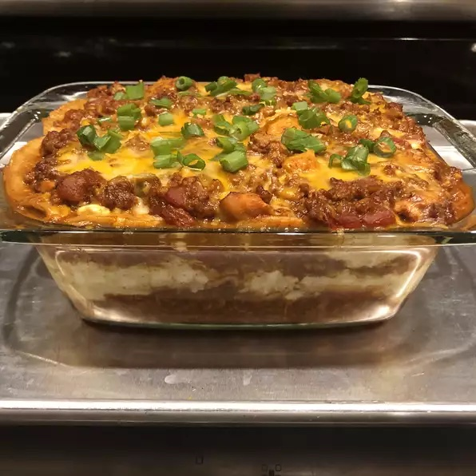

Lasagna

Description:
This icredible lasagna recipe is a classic that everyone should try atleast once. Even if you are not into Italian cuisine, its rich look must peak your interest.
All you need is a little time, some patience, and some basic ingrediants. You won't regret it.
Ingredients:
- 1 tablespoon vegetable oil
- 1 onion, chopped
- 3 cloves garlic, chopped
- 1¼ pounds ground turkey
- 1 (28 ounce) can enchilada sauce
Steps:
- Heat oil in a large pot over medium heat. Add onion and garlic; cook and stir until onion is translucent, about 5 minutes. Stir in ground turkey; cook until no longer pink, about 5 minutes. Drain excess grease.
- Stir enchilada sauce and diced tomatoes into the pot. Simmer until flavors combine, about 20 minutes. Remove from heat.
- Preheat the oven to 375 degrees F (190 degrees C).
- Mix cottage cheese, egg, and cumin together in a small bowl.
- Spread 1/3 of the turkey sauce in the bottom of an 8-inch baking dish. Cover with 1/2 of the corn tortillas. Spread 1/2 of the cottage cheese mixture on top. Sprinkle 1/3 of the Mexican cheese on top. Repeat layers once more, ending with remaining turkey sauce and Mexican cheese.